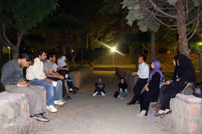
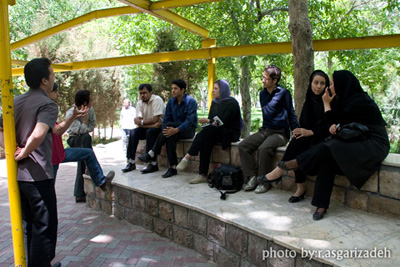
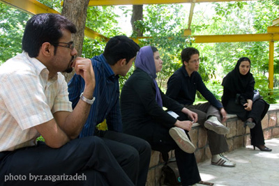

|
|

دیدار با کنشگران کمپین یک میلیون امضا در مشهد
يكشنبه15 اردیبهشت 1387
طی روزهای 10و12و13 اردیبهشت مجموعه جلسات مشترکی بین اعضای کمپین تهران و مشهد با فعالان جنبش دانشجویی و انجمن های اسلامی دانشگاه های مشهد برگزار شد . سوال ها حول محور مفاد کمپین و نوع جمع آوری امضا ، و فقه و مذهب بود که دو نفر از دوستان حقوقدان کمپین مشهد، سوالات حقوقی دوستان دانشجو را پاسخ دادند .یکی از انتقاد های وارد بر کمین از طرف دوستان دانشجو نزدیک شدن فضای جنبش زنان و کمپین به فضای سیاسی بود. کمپینی های مشهد با ارائه گزارشی از عملکرد خود در مشهد خبر از مجموعه جلسات حقوقی داند که به طور مرتب در مشهد برگزار کرده بودند .
در این نشست دوستانه فعالان کمپین مشهد گزارش هایی از نحوه فعالیت خود در ماههای گذشته ارائه دادند و شرحی از فعالیتهای اعضای کمپین در تهران و دیگر شهرها را شنیدند. تبادل تجربه ها ،تقسیم فعالیتها،ارائه طرح برای ایجاد همبستگی بیشتر میان اعضا و درمیان گذاشتن فکرهای تازه برای آگاهی بیشتر دادن به شهروندان مشهدی در مورد فعالیتهای کمپین از جمله نتایج این نشست بود.
گزارش دیدار ا کنشگران مشهد و تهران در وبلاگ کمپین مشهد


